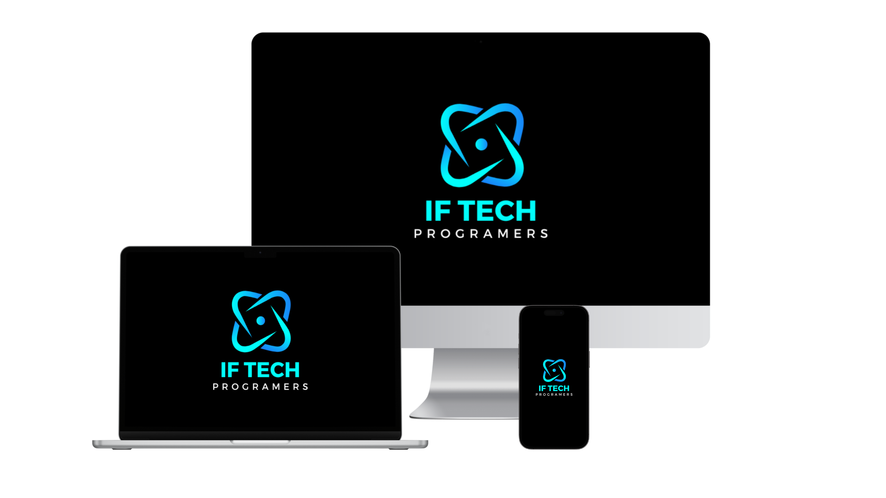

IF TECH
Programers
Está pronto para levar seu negócio para o próximo nível? Na IF TECH, somos especialistas em criar soluções web personalizadas que colocam sua marca em destaque! Desde sites deslumbrantes e aplicativos de ponta, até integração de sistemas e otimização máxima, nossa equipe de experts está aqui para realizar sua visão com inovação.
